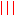

Svarog oferuje kontrolę sposobu wyświetlania wielokanałowego EEG, m. in.:
antialiasing,  linie,
powiększanie fragmentu sygnału (zoom),
[] oglądanie widma wybranego fragmentu sygnału,
definiowanie własnych montaży i
filtrów częstościowych, włączanie
i wyłączanie
 filtrów,
oznaczanie wybranych fragmentów sygnału ,
definiowanie własnych oznaczeń
filtrów,
oznaczanie wybranych fragmentów sygnału ,
definiowanie własnych oznaczeń  ,
jak również klasyczne i najnowsze metody analizy sygnałów:
uśrednianie potencjałów wywołanych (EP), estymację spektrogramu (STFT),
transformacji falkowej (WT), kierunkowej funkcji przejścia (DTF) i analizę składników niezależnych (ICA)
— aż po rejestrację
sygnału EEG i wideo
.
,
jak również klasyczne i najnowsze metody analizy sygnałów:
uśrednianie potencjałów wywołanych (EP), estymację spektrogramu (STFT),
transformacji falkowej (WT), kierunkowej funkcji przejścia (DTF) i analizę składników niezależnych (ICA)
— aż po rejestrację
sygnału EEG i wideo
.
Pomoc Svaroga obejmuje m.in. opis funkcji, dostępnych w kolejnych menu: